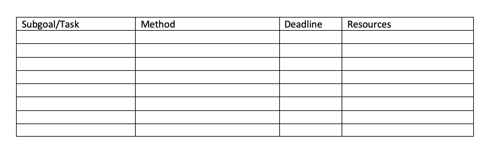
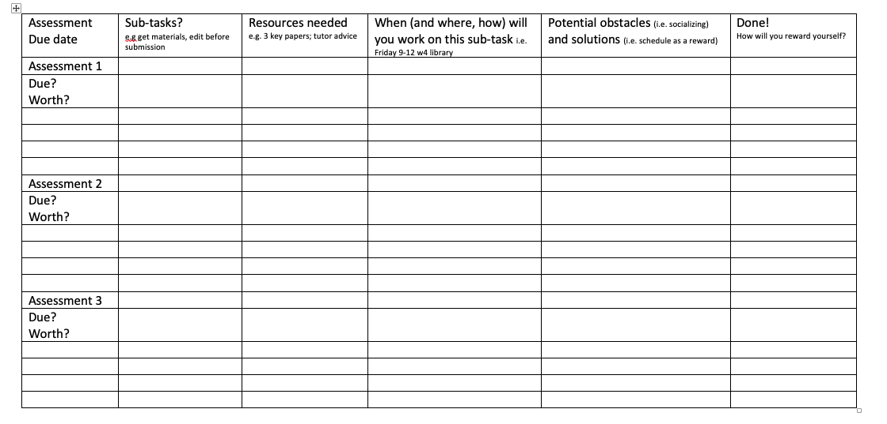
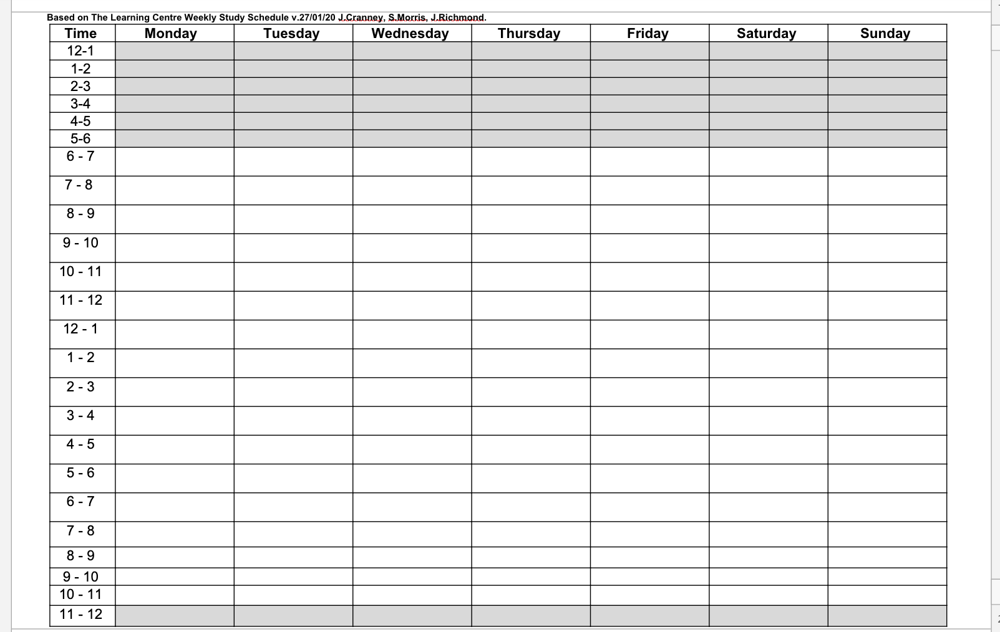

Chapter 2 Looking forward
2.1 Goal setting W1
Self-directed learners set goals and plan for their own success. Use this 5 Step template (download here) to set some goals for the term and think about strategies you will put in place to achieve them.
- Write down 3 goals for this term. These may be related to your studies, health, and/or some other domain of your life. Ensure you have at least one academic goal.
Goal 1:
Goal 2:
Goal 3:
- Focusing on an academic goal (e.g. obtaining a distinction in this course by handing in good quality assessments on time): Write down 3 reasons for WHY you want to achieve this goal.
Reason 1:
Reason 2:
Reason 3:
- Is your goal SMART? Check out this video for more information about SMART goals. Rewrite your academic goal below to make it as specific as possible. Make sure you have a way to measure the outcome and include what action you will need to take to achieve it. Is your goal realistic and have you set yourself a timeframe for achieving it?
- Use the table below to break down your academic goal into sub-goals/tasks (e.g things that you aim to achieve, or individual tasks that each need to be completed to achieve your goal). Add methods (details of how you will approach that task) and deadlines. Include what resources you will need and how you will get them.

- Make a list of potential obstacles/barriers/setbacks, write them down.
Obstacle 1:
Obstacle 2:
Obstacle 3:
Pick one potential barrier and brainstorm solutions. (i.e. if I run into X problem, I could do A, or B, or C).
Solutions:
This goal setting activity is adapted from a template by Prof Jacky Cranney j.cranney@unsw.edu.au.
2.2 Assessment planning W2
Self-directed learners plan for their own success and manage their time well. Use this template (download here) to plan when your assessments are due this term and think about strategies that you will use to stay on track.

This assessment activity is adapted from a template adapted from a template by from The Fridge created by by j.cranney@unsw.edu.au & v.nithy@unsw.edu.au.
2.3 Flex week check in W5
We have made it to flexibility week and we are half way done in the course. Now is a good time to think about what you have achieved thus far and what you might want to change about your strategies going forward.
It is also a good time to think about how you are going to refresh during flex week, so you can head into the second half of the course with renewed motivation. Use this template (download here) to make a plan for flexibilty week
On a scale of 0 to 10, how happy are you with how the first half of the course has gone?
What could you have done differently, to make you feel better about how things have gone?
At this point in the term, it can feel like there is a LOT to do and not a lot of time to do it. Make a list of things you would like to get done during flexibility week.
Use Covey’s quadrants to work out which of the things on your list are both urgent and important. List them below
Making time for yourself in flexibility week is also important. Watch this video about our core psychological needs and then make a list of 3 things you will do to prioritise your wellbeing this week.
This flex week check in activity is adapted from a template by Prof Jacky Cranney j.cranney@unsw.edu.au.
2.4 Study planning W10
168 hours Weekly Time-management Tool
Do you ever feel like there just aren’t enough hours in the week? This can feel especially true when assessments start to pile on and when exams are looming. This tool can help you plan how to strike a balance between classes, study, work, sleep, exercise, and time with family and friends.
Step 1: Print a few copies of the 168 hours table (download here). In the first week, just record how you actually spend your 168 hours. Use colour coding to make it easy to see how much time you spend on classes, study, work, sleep, exercise, and time with family and friends.
Step 2: At the end of the first week, plan your ‘ideal week’- how do you WANT to spend your 168 hours. Start with non-negotiables, such as sleep, domestic essentials like food prep/eating, classes, travel to/from classes, exercise. Then block out study periods, and some time to connect with friends/family. Decide specifically what you will do in each of the study periods.
Step 3: As in Step 1, record what you actually do in the second week.
Step 4: Compare your plan with what actually happened and reflect on how successful you were in achieving your “ideal week.” Make changes to your plan for your third week, keeping in mind what you have learned from the second week.
To receive credit for completing this task, answer the following questions in the activity tool…
- What were the biggest differences between your ideal week and your actual week?
- What obstacles got in the way of you being able to spend your time as you had planned? How did you overcome these obstacles?
- What changes did you make to your ideal week after trying this method?

This 168hr week activity is adapted by Prof Jacky Cranney from The Learning Centre Weekly Study Schedule.